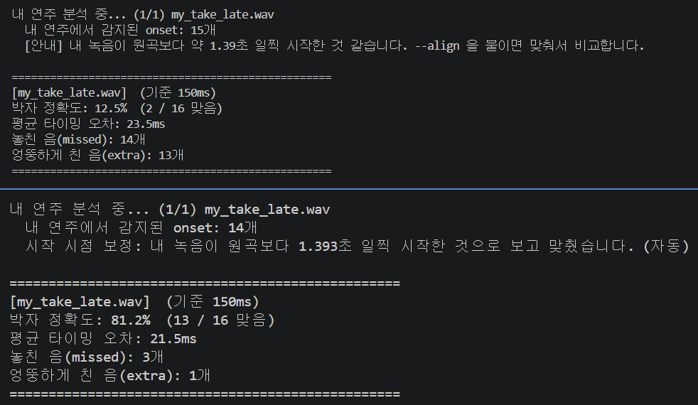
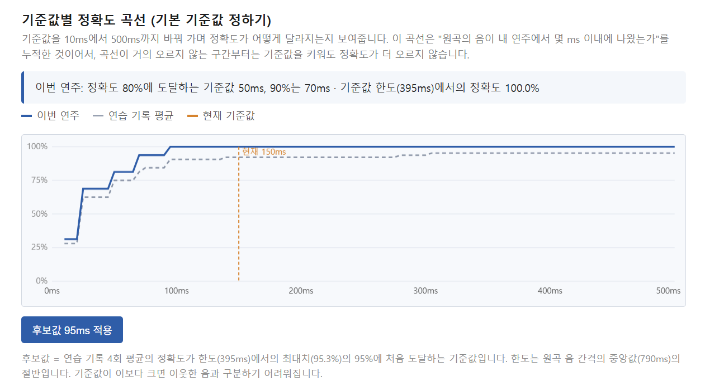
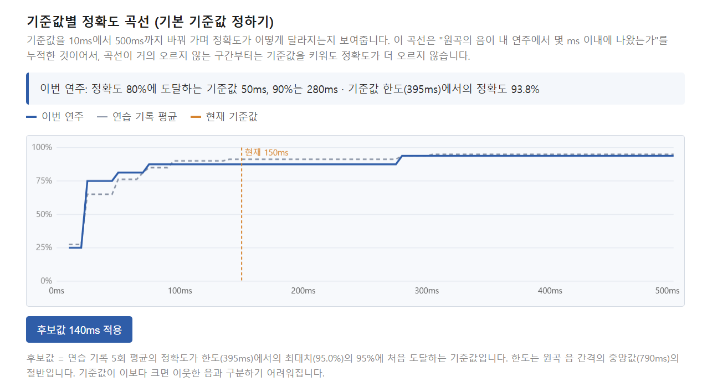

- 실제 기타 녹음 결과를 기준값별로 비교·정리해서, 적절한 기본 기준값 결정
- 최종 발표 대비: README 정리, 시연 흐름 정리
실제 녹음으로 비교하기 위해 먼저 실제 녹음에서 부딪히는 문제(시작 시점 어긋남, 음원 형식)를 해결하고,
기준값을 정할 도구와 판단 기준을 만든 뒤, 실제 기타 녹음으로 기본 기준값을 정했습니다.
| 문제 | 이번에 한 것 | |
|---|---|---|
| ① 시작 시점 | 휴대폰으로 녹음하면 원곡과 시작 타이밍이 어긋나서, 연주가 같아도 정확도가 크게 떨어짐 | 어긋난 시간을 찾아 자동으로 맞춰서 비교하는 기능 (--align, --offset) |
| ② 기준값 | 기본 기준값을 무엇으로 정할지 근거가 없었음 | 웹 리포트에 기준값별 정확도 곡선과 판단 기준(후보값, 한도) 추가. 터미널에서는 --sweep |
| ③ 음원 형식 | 휴대폰 녹음(m4a, mp4 등)이 열리지 않으면 어려운 오류 문구만 나옴 | mp3·m4a·mp4 등을 ffmpeg로 자동 변환해서 읽고, 안 되면 해결 방법을 안내 |

--align 으로 실행한 결과 비교# 어긋나 보이면 안내만 출력 (점수는 그대로) python accuracy_test.py my_take_late.wav # 자동으로 찾아서 맞춰 비교 python accuracy_test.py --align my_take_late.wav # 어긋난 시간을 직접 지정 (양수 = 내 녹음이 그만큼 일찍 시작) python accuracy_test.py --offset=1.37 my_take_late.wav
--sweep 으로 같은 내용을 표로 확인
| 기준 | 내용 |
|---|---|
| 후보값 | 정확도가 최대치의 95%에 처음 도달하는 기준값. 이보다 키워도 정확도가 거의 오르지 않는 지점 |
| 한도 | 원곡 음 간격의 중앙값의 절반. 기준값이 이보다 크면 이웃한 음과 짝지어져서 정확도가 부풀려짐 |
| 연주 수준 | 같은 곡도 연습 단계에 따라 알맞은 기준이 달라질 수 있어서, 웹 리포트에서 바꿔 볼 수 있게 유지 |
--align --sweep 으로 실행
시작 시점을 맞춘 뒤, 기준값별 정확도 곡선을 확인
align_test.py로 재현 가능)
음 간격이 제각각인 곡은 놓친 음 35%, 엉뚱한 음 30%인 연주에서도 99% 이상 정확히 찾음 / 이미 잘 맞는 연주 300개 중 잘못 보정한 경우 0개--offset 으로 직접 지정 (그래서 자동 적용을 기본으로 켜지 않음)pip install imageio-ffmpeg 한 줄로 해결하도록 안내